2.5 입력 방식
다중 포인터 또는 경로기반 동작을 통한 입력은 단일 포인터 입력으로도 조작할 수 있어야 합니다.
단일 포인터 입력 지원, 포인터 입력 취소, 레이블과 네임, 동작기반 작동 등 다양한 입력 방식을 지원합니다.
2.5.1. 단일 포인터 입력 지원
다중 포인터 또는 경로기반 동작을 통한 입력은 단일 포인터 입력으로도 조작할 수 있어야 한다.
• 두 개 이상의 손가락을 동시에 사용해야 하는 다중 포인터(예: 핀치 줌, 두 손가락 탭 등) 또는 쓸어 넘기기 등의 경로기반 동작(예: 스와이프, 끌기와 놓기, 그리기 등)을 통한 입력으로 작동하는 모든 기능은 단일 포인터 입력으로 조작할 수 없는 경우
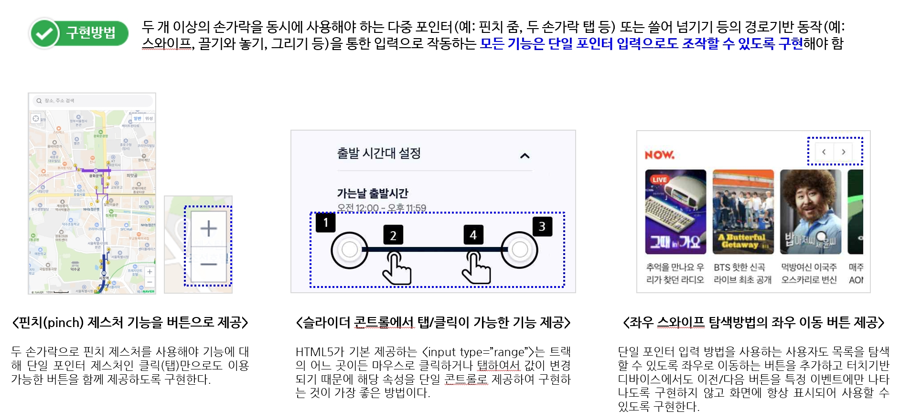 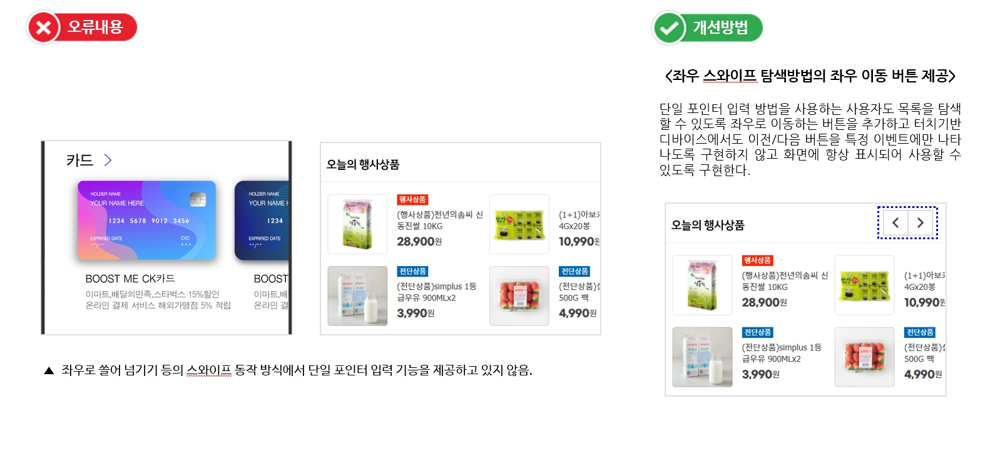
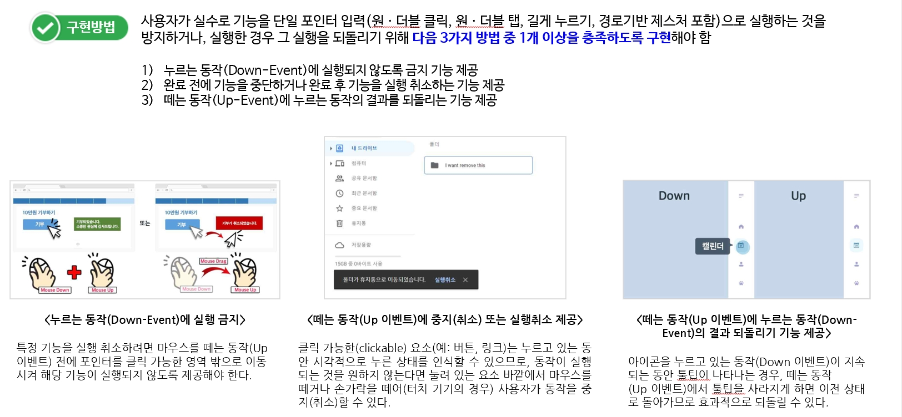
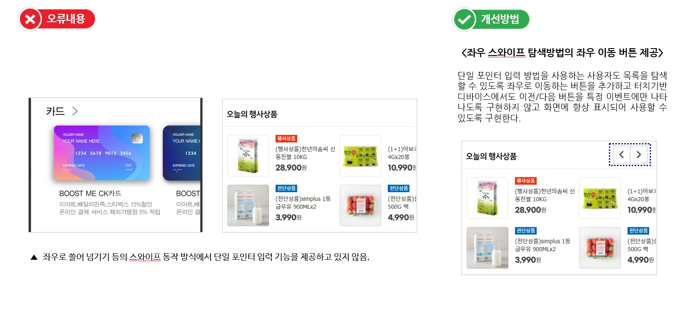
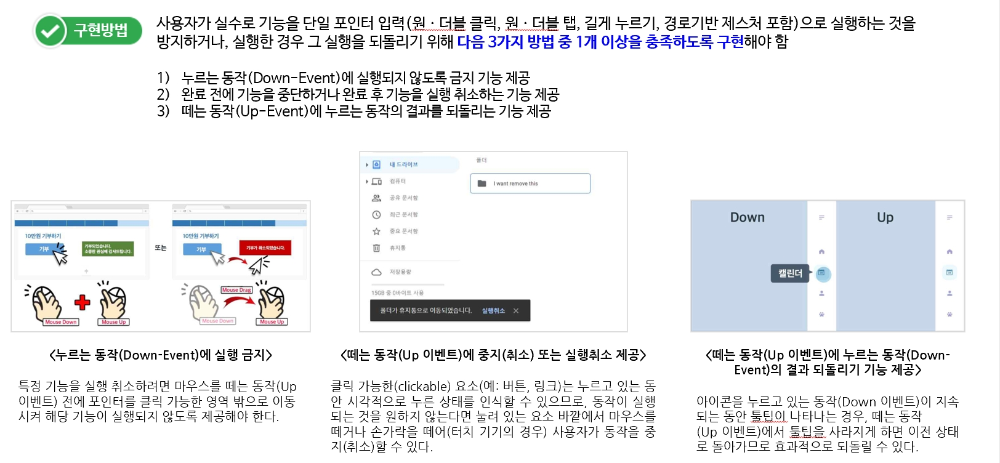
2.5.2. 포인터 입력 취소
단일 포인터 입력으로 실행되는 기능은 취소할 수 있어야 한다.
• 단일 포인터 입력(원ㆍ더블 클릭+, 원ㆍ더블 탭, 길게 누르기, 경로기반 제스처 포함)으로 실행되는 기능을 취소할 수 있는 기능을 다음 1가지 방법 이상으로 제공하지 않은 경우
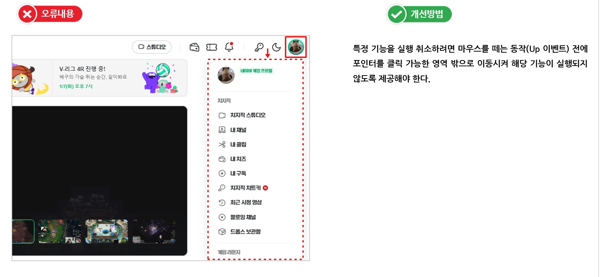 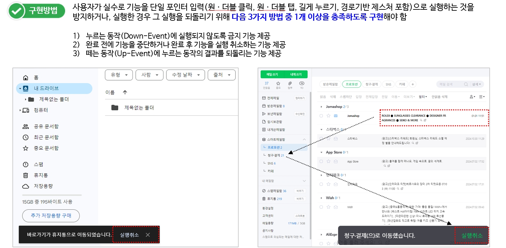 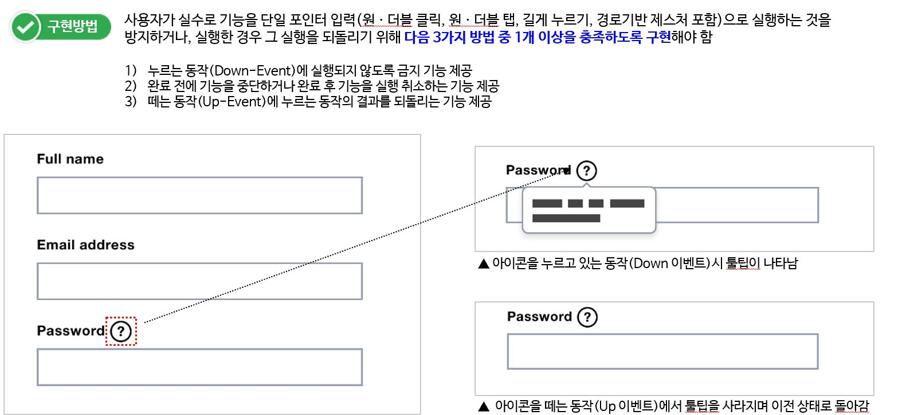 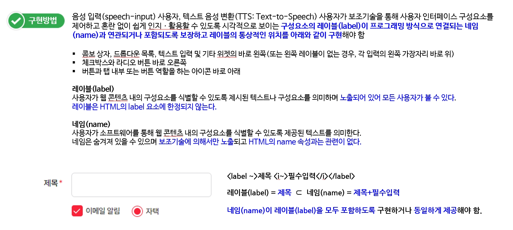2.5.3. 레이블과 네임
텍스트 또는 텍스트 이미지가 포함된 레이블이 있는 사용자 인터페이스 구성요소는 네임에 시각적으로 표시되는 해당 텍스트를 포함해야 한다.
• 시각적으로 보이는 텍스트 레이블(label)에 대한 접근 가능한 네임(name)을 포함하지 않은 경우
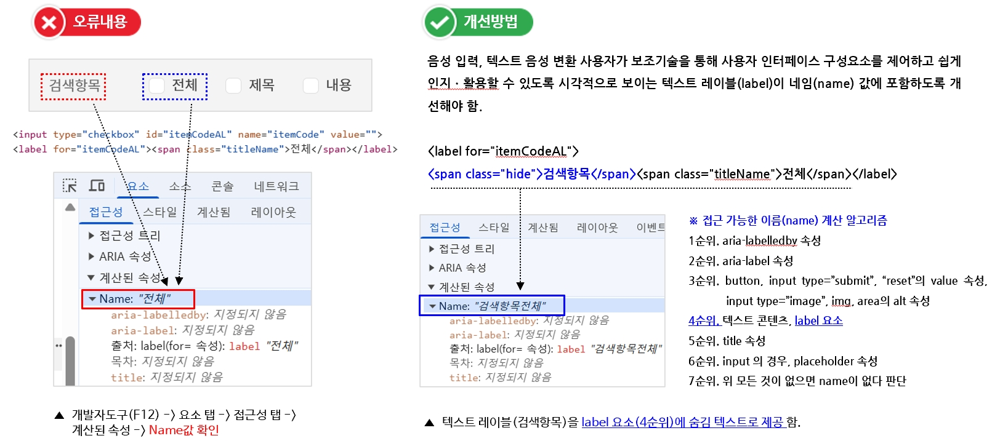 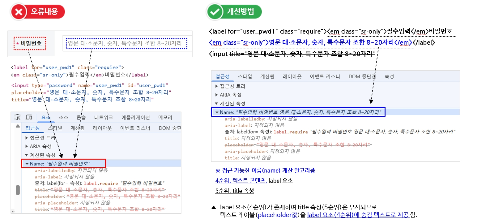 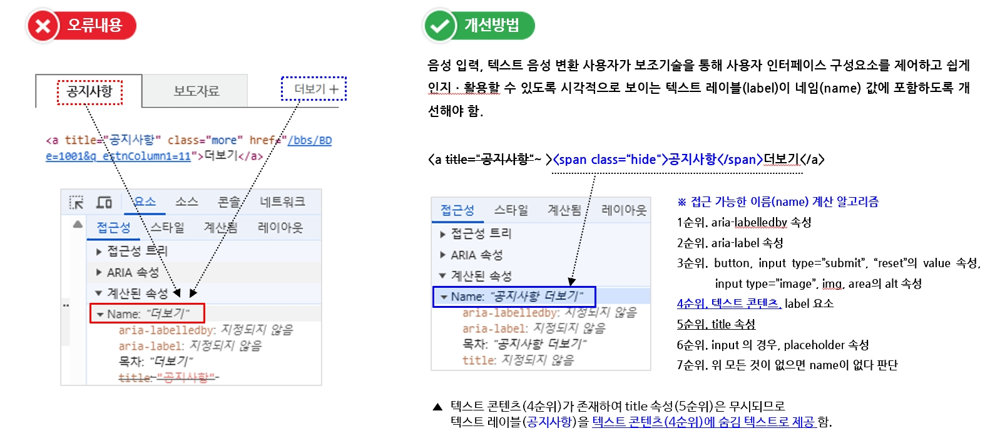 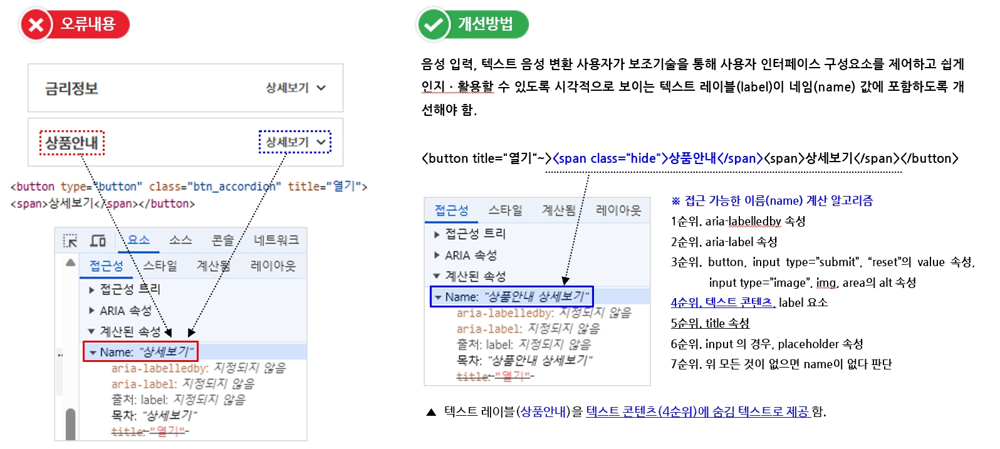 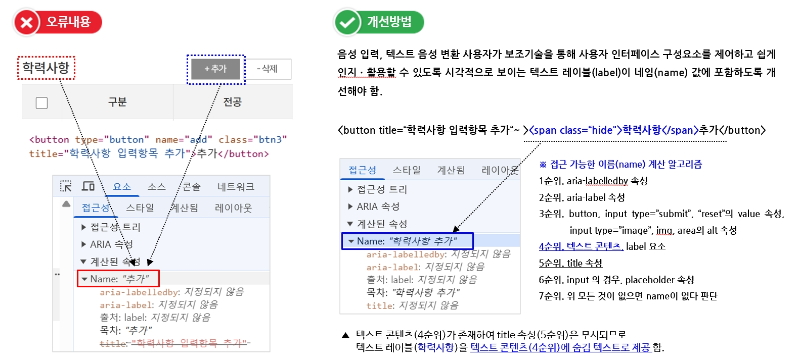2.5.4. 동작기반 작동
동작기반으로 작동하는 기능은 사용자 인터페이스 구성요소로 조작할 수 있고, 동작기반 기능을 비활성화할 수 있어야 한다.
• 동작기반 작동(흔들기 또는 기울이기)에 대한 비활성화 기능을 제공하지 않은 경우
• 버튼 등 사용자 인터페이스 구성요소로 대체 기능을 제공하지 않은 경우
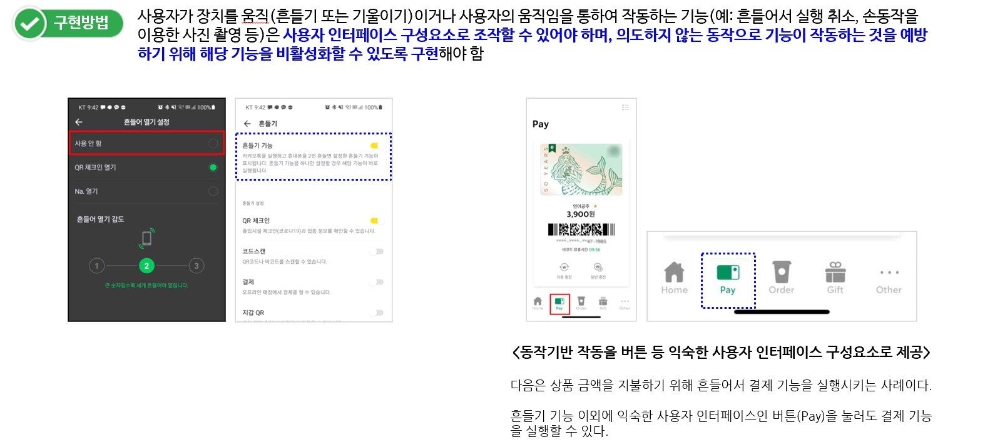 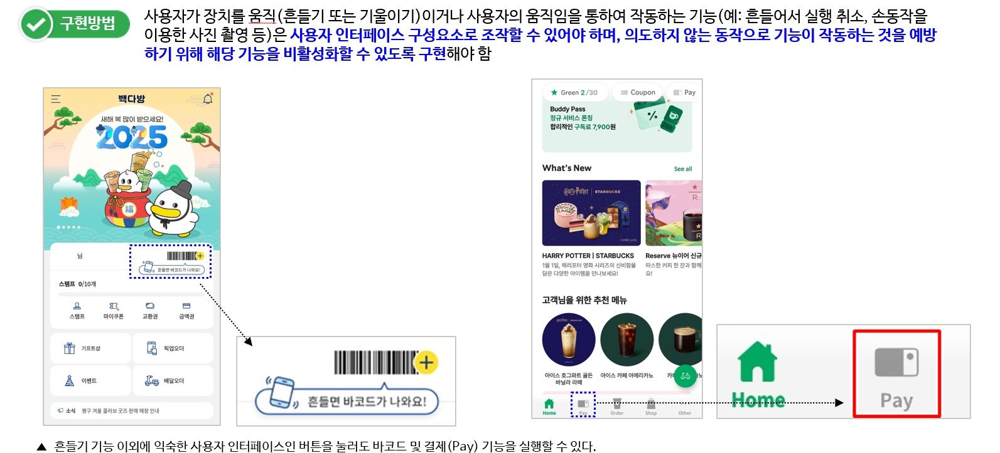 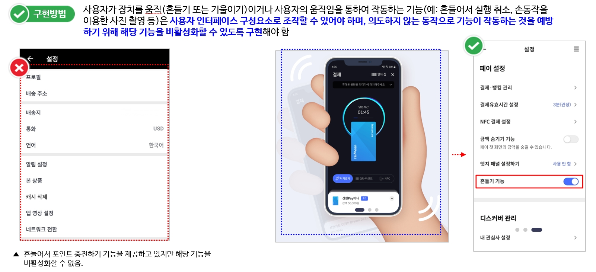